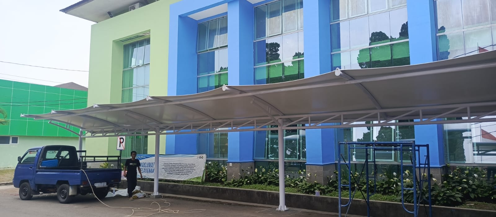

Kanopi Membrane
Kanopi rumah, carport, dan teras dengan rangka baja ringan serta membrane anti-panas dan anti-UV.
Spesialis tenda & kanopi membrane Indonesia
Kami merancang, memproduksi, dan memasang struktur membrane berkualitas tinggi — kanopi, atap, dan tenda untuk hunian, komersial, serta area publik di seluruh Indonesia.

PT. NUSA PMC Teknologi Membrane Indonesia adalah kontraktor spesialis struktur membrane berbasis di Jl. Cipetir–Sudajaya, Sukamaju, Kec. Kadudampit, Kab. Sukabumi, Jawa Barat 43153. Kami menggabungkan desain dengan visualisasi 3D, engineering, fabrikasi, dan instalasi di bawah satu atap — agar setiap proyek berjalan terkendali, tepat waktu, dan bergaransi.
Dari carport rumah hingga atap stadium — dikerjakan oleh tim ahli dengan material membran premium dan teknik fabrikasi presisi.
Kanopi rumah, carport, dan teras dengan rangka baja ringan serta membrane anti-panas dan anti-UV.
Atap membrane skala besar untuk stadium, amphitheater, mall, dan area publik dengan bentang lebar tanpa kolom.
Perhitungan struktur, analisis beban angin, visualisasi 3D, dan RAB transparan sebelum produksi dimulai.
Kepuasan klien adalah prioritas utama kami — dari konsultasi hingga serah terima.
“Kanopi membrane carport dan terasnya dikerjakan rapi sekali. Panas berkurang drastis, pemasangan cepat, dan hasilnya jauh lebih elegan dari perkiraan saya. Tim NUSA PMC juga sangat responsif.”
“Proyek shade sail untuk area kolam renang villa kami berjalan sangat tertib. Tim survey dengan teliti mengukur dimensi, RAB yang diberikan detail tapi tetap transparan. Hasil akhirnya pas presisi sesuai gambar 3D yang mereka kirim.”
“Kami butuh teropeng parkir untuk gedung kantor dengan bentang lebar. Rekanan lain enggan terima, tapi NUSA PMC malah langsung dateng survey, hitung strukturnya, dan jadi. Sekarang parkir kami teduh, rapi, dan kelihatan profesional.”
“Pergola membran di taman belakang rumah kami benar-benar mengubah kesan hunian. Pengerjaannya cepat, tukang-tukangnya sopan, dan setelah selesai sisa material mereka bersihkan sampai tuntas. Sangat recommended.”
“Kanopi membrane carport dan terasnya dikerjakan rapi sekali. Panas berkurang drastis, pemasangan cepat, dan hasilnya jauh lebih elegan dari perkiraan saya. Tim NUSA PMC juga sangat responsif.”
“Proyek shade sail untuk area kolam renang villa kami berjalan sangat tertib. Tim survey dengan teliti mengukur dimensi, RAB yang diberikan detail tapi tetap transparan. Hasil akhirnya pas presisi sesuai gambar 3D yang mereka kirim.”
“Kami butuh teropeng parkir untuk gedung kantor dengan bentang lebar. Rekanan lain enggan terima, tapi NUSA PMC malah langsung dateng survey, hitung strukturnya, dan jadi. Sekarang parkir kami teduh, rapi, dan kelihatan profesional.”
“Pergola membran di taman belakang rumah kami benar-benar mengubah kesan hunian. Pengerjaannya cepat, tukang-tukangnya sopan, dan setelah selesai sisa material mereka bersihkan sampai tuntas. Sangat recommended.”